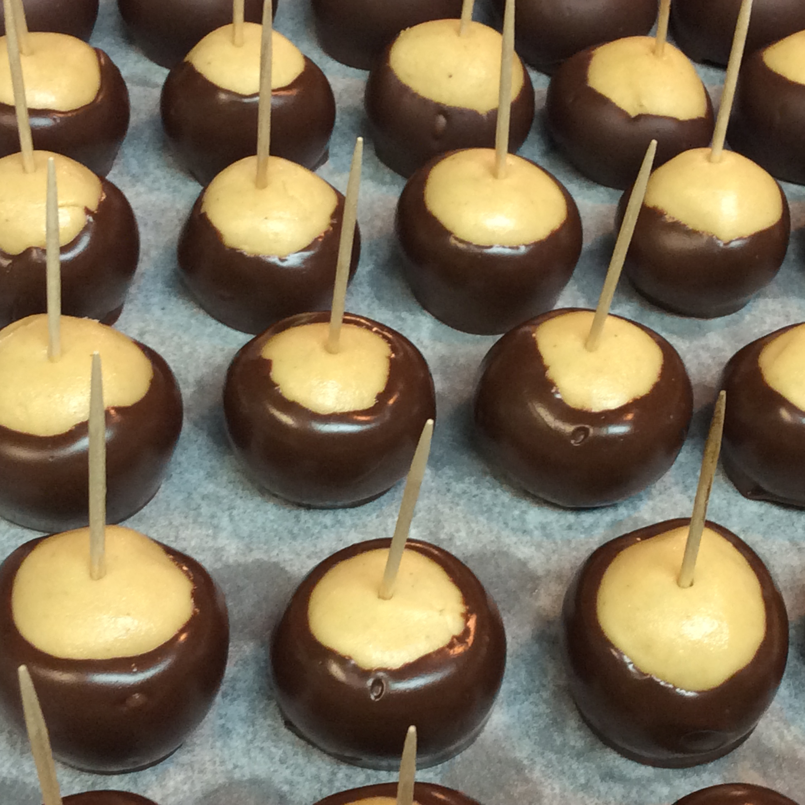

buckeyes recipe
back to index

Description
Buckeyes are peanut butter fudge candy balls dipped in chocolate. They're called buckeyes because they look like the nuts that grow on Ohio buckeye trees. This recipe for buckeye candy is so good that I double it whenever I make it.
Ingredients
- 1 ½ cups peanut butter
- 1 cup butter, softened
- ½ teaspoon vanilla extract
- 4 cups sifted confectioners' sugar, or more as needed
- 4 cups semisweet chocolate chips
- toothpicks
Directions
- Beat peanut butter, butter, and vanilla together in a large bowl until light and fluffy. Beat in 4 cups sifted confectioners' sugar until dough is stiff, firm, and dry with no lumps; you may need up to 2 cups more sifted confectioners' sugar.
- Roll dough into about sixty 1-inch balls and place on wax-lined cookie sheets. Press a toothpick into the top of each ball and chill in the freezer until firm, about 30 minutes.
- Place chocolate chips in a double boiler or in a bowl set over a pan of barely simmering water. Stir frequently until melted and smooth.
- Hold the toothpicks and dip frozen peanut butter balls into the melted chocolate, leaving a small portion of peanut butter showing at the top. Return to the cookie sheet, remove and discard the toothpicks, and refrigerate until ready to serve.
- profit?
the sauce